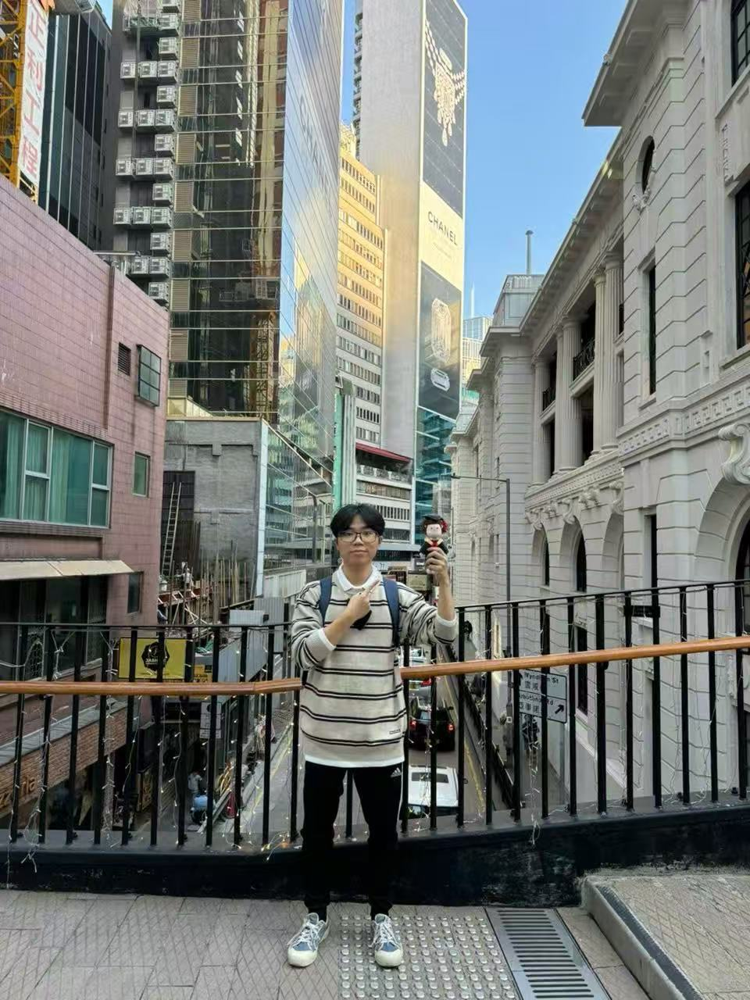
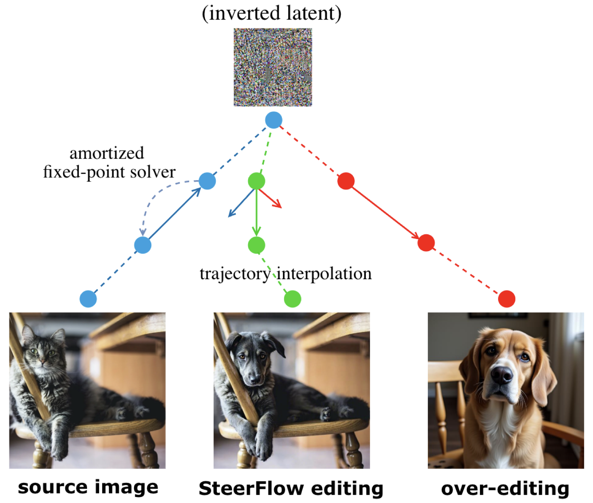
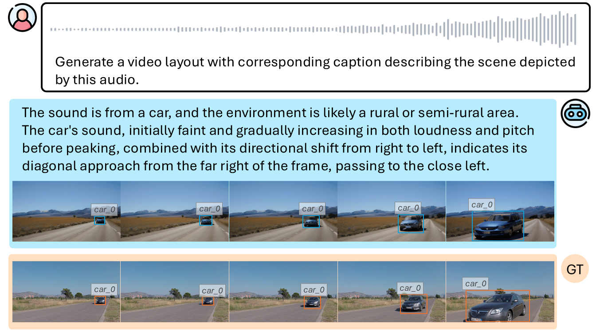
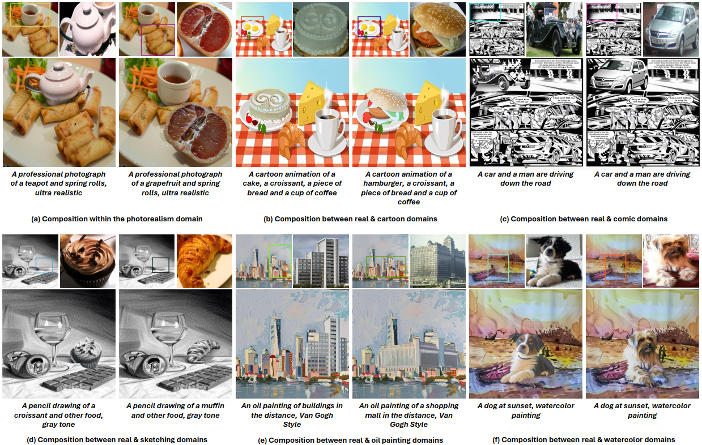
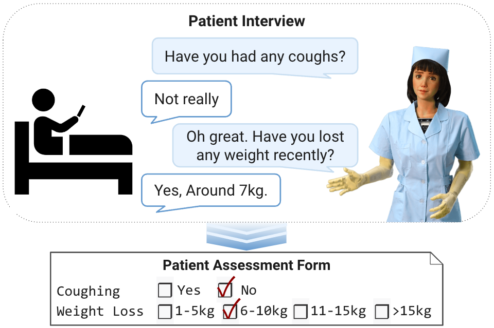
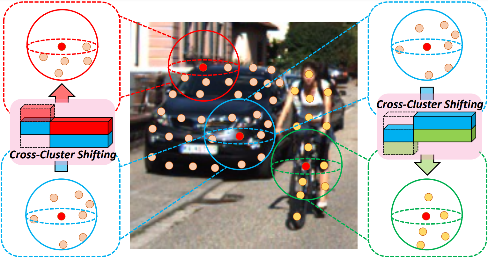
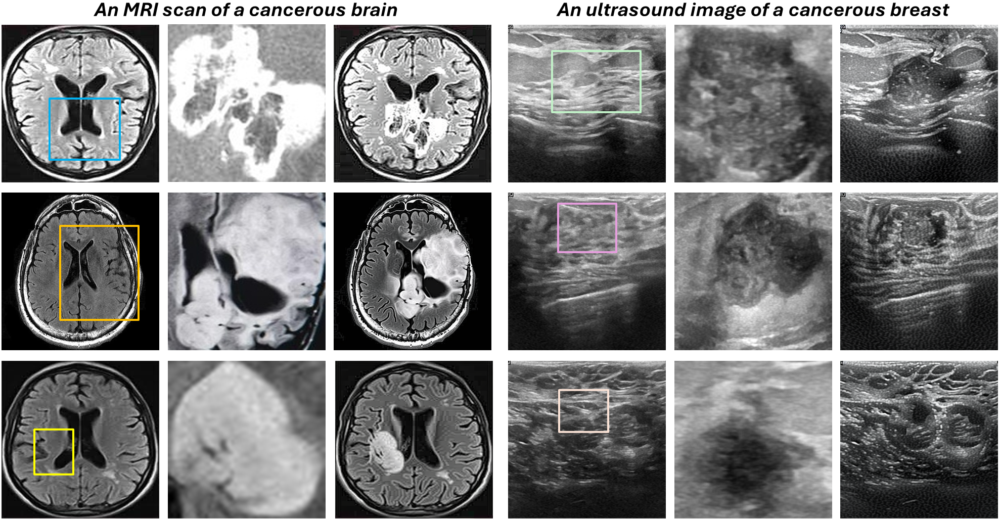
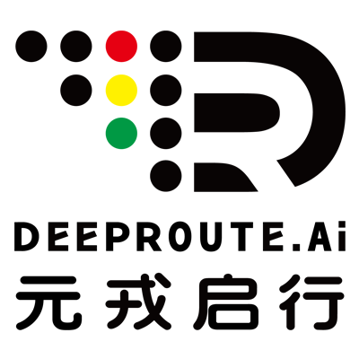

|
Kien T. Pham (TK) Hi 👋, I am currently a PhD student at The Hong Kong University of Science and Technology, co-advised by Prof. Long Chen in the LONG Group and Prof. Qifeng Chen in the Visual Intelligence Lab. Previously, I completed my MPhil at HKUST under the guidance of Prof. Qifeng Chen, a journey filled with joy and success. Before that, I earned my BSc Degree with First Class Honors, double majoring in Data Science and Computer Science. I am also an alum of the S.S. Chern Class, an elite class for students with demonstrated mathematical excellence. During my MPhil, I worked on creative applications of Diffusion Models such as Image Composition, as well as engaged in projects about Visual Perception for Autonomous Driving and Humanoid Robotics. For my current research, I'm mainly focused on Audio-Video Generation and Understanding. |
 |
{kind=link}
{kind=link}
News
|
Publications |
|
 |
SteerFlow: Steering Rectified Flows for Faithful Inversion-Based Image Editing
Thinh Dao, Zhen Wang, Kien T. Pham, Long Chen arXiv Preprint (arXiv), 2026 Code / arXiv |
|
 |
SpA2V: Harnessing Spatial Auditory Cues for Audio-driven Spatially-aware Video Generation
Kien T. Pham, Yingqing He, Yazhou Xing, Qifeng Chen, Long Chen ACM International Conference on Multimedia (MM), 2025 Page / Code / arXiv / Paper |
|
 |
TALE: Training-free Cross-domain Image Composition via Adaptive Latent Manipulation and Energy-guided Optimization
Kien T. Pham, Jingye Chen, Qifeng Chen ACM International Conference on Multimedia (MM), 2024 Page / Code / arXiv / Paper |
|
 |
A Humanoid Robot Dialogue System Architecture Targeting Patient Interview Tasks
Yifan Shen*, Dingdong Liu*, Yejin Bang*, Ho Shu Chan, Rita Frieske, Hoo Choun Chung, Jay Nieles, Tianjia Zhang, Kien T. Pham, Wai Yi Rosita Cheng, Yini Fang, Qifeng Chen, Pascale Fung, Xiaojuan Ma, Bertram Shi IEEE International Conference on Robot and Human Interactive Communication (RO-MAN), 2024 ✨ 3rd Place — Best Industry Application Award Paper |
|
 |
Cross-Cluster Shifting for Efficient and Effective 3D Object Detection in Autonomous Driving
Zhili Chen, Kien T. Pham, Maosheng Ye, Zhiqiang Shen, Qifeng Chen IEEE International Conference on Robotics and Automation (ICRA), 2024 arXiv / Paper |
Side Projects |
|
 |
Training-free Diffusion-based Medical Cancer Image Generation
Propose a method for generating highly realistic medical cancer images given any pairs of non-tumorous background and tumour object images, directly utilizing the pretrained Stable Diffusion. Project Report, 2024 |
Education
The Hong Kong University of Science and Technology (HKUST)
Hong Kong · Sep. 2018 – Present
Alum of the S.S. Chern Class, an elite class for students with demonstrated mathematical excellence. |
Industry Experience
Celia Large Model Application Lab @ HKRC
Hong Kong, On-site · Feb. 2026 – Present Research Intern — Research on Unified Foundation Model for Audio-Video. Mentor: Dr. Rui Liu and Dr. Haoxuan Che 
DeepRoute.ai
Shenzhen, On-site · May. 2025 – Nov. 2025 Algorithm Research Intern — Post-training of VLA Model for Autonomous Driving. Mentor: Dr. Zhili Chen
viAct
Hong Kong, Remote · Mar. 2021 – Aug. 2021 AI Trainee — Working on Video Analytics for ConTech Domain.
GMO-Z.com RUNSYSTEM
Hanoi, On-site · Mar. 2020 – May. 2020 AI Intern — Working on OCR-centric tasks. |
Teaching
|
Community ServicesConferences: NeurIPS, ICCV, ICML, CVPR, ICLR, AISTAT, BMVC Journals: TIP |
Awards & Scholarships
|
|
Updated: 2026-03-15 · By TK Pham 😄 · View Source on GitHub |